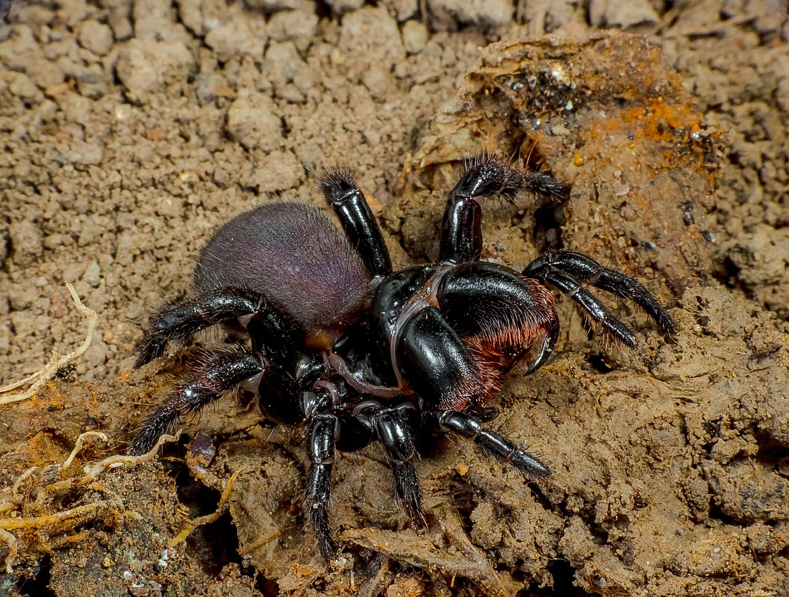
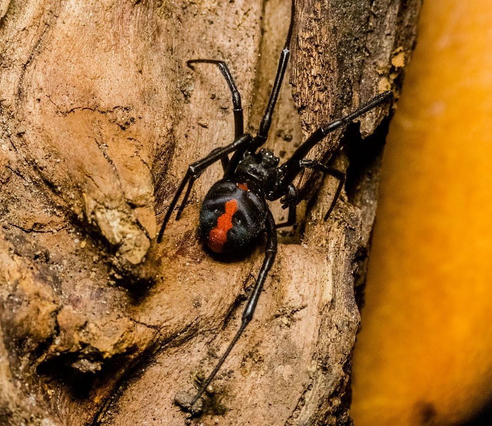
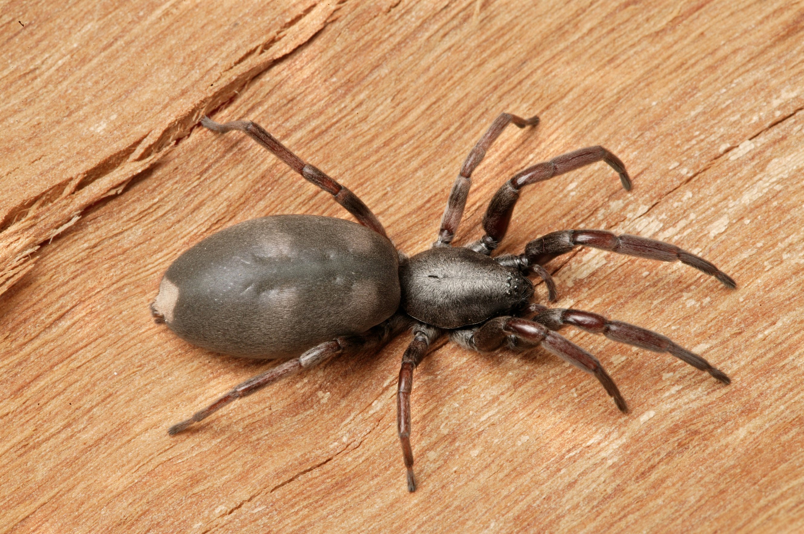

Anthropods
Australia has some highly venomous spiders, including the Sydney Funnel-web, its relatives in the family Hexathelidae, and the Redback Spider, whose bites can be extremely painful and have historically been linked with deaths in medical records.[1] Most Australian spiders do not have venom that is considered to be dangerously toxic. No deaths caused by spider bites in Australia have been substantiated by a coronial inquest since 1979. There are, however, no shortage of sensationalised news reports that fail to cite evidence of any kind. A Field Guide to Spiders of Australia published by CSIRO Publishing in 2017[3] featuring around 836 species illustrated with photographs of live animals, around 381 genera and 78 families, introduced significant updates to taxonomy from Ramirez, Wheeler and Dmitro.
  